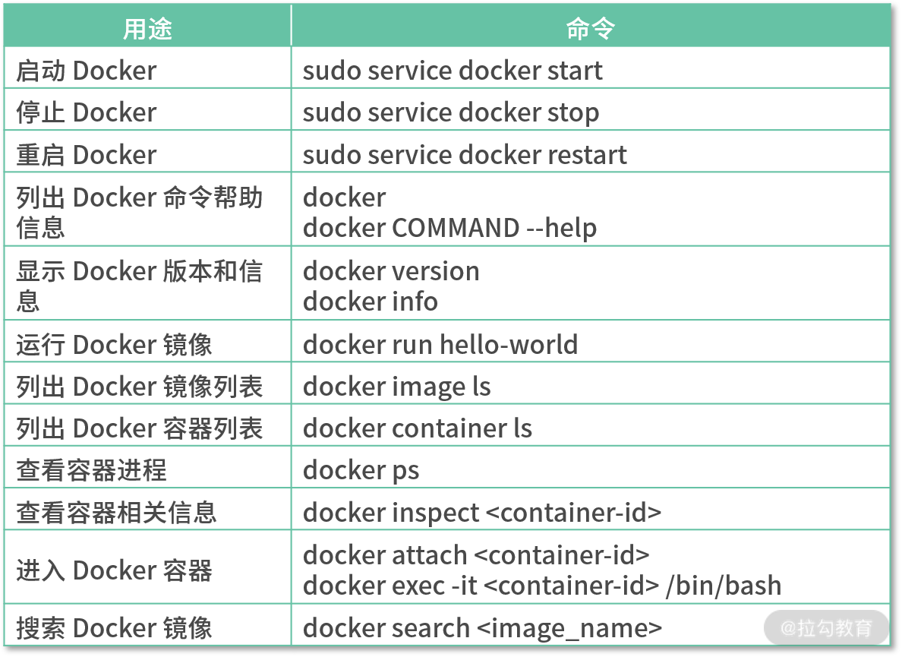
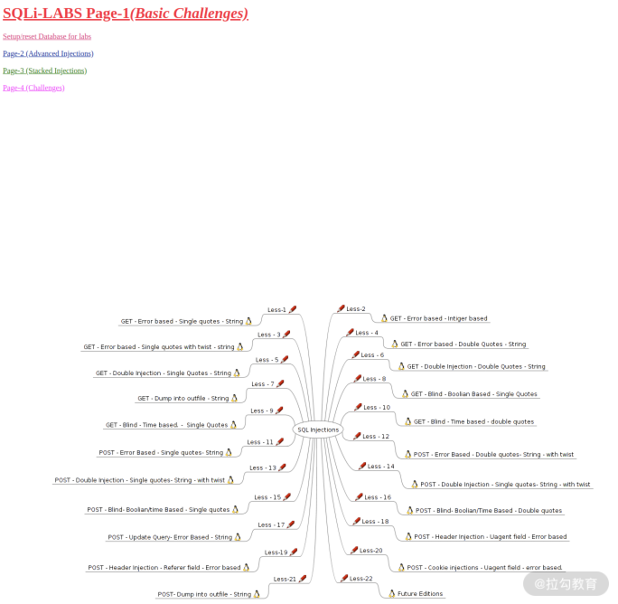
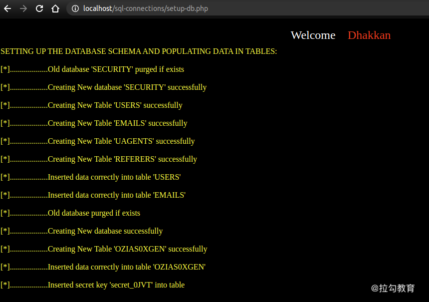
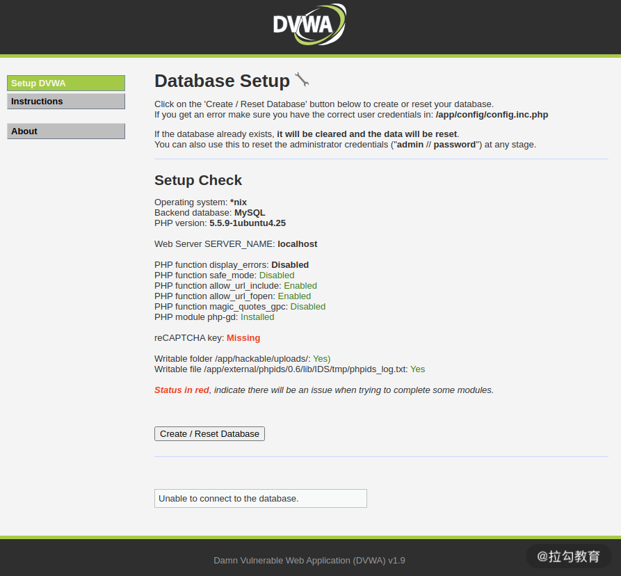
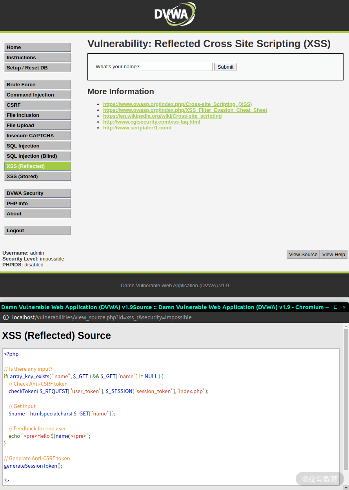
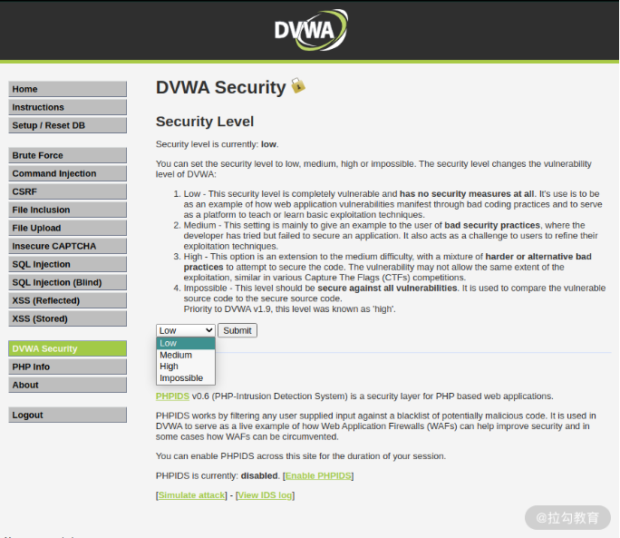

要点：docker、漏洞练习环境搭建、用于学习 Web 漏洞的常见靶
一、安装与使用 Docker 容器
以前我们搭建网站，需要在服务器依次安装 Apache、PHP、MySQL 等应用，比较烦琐，而且不同的源还有不同的应用版本，跟系统环境又可能存在兼容性的问题，这就需要手动添加源地址，甚至是自己编译安装。
后来出现了 XAMPP、PHPStudy 等优秀的 PHP 集成环境，可以非常便捷地安装。但是安装好之后，如果要使用某些 PHP 网站代码，我们仍然需要查找下载，再部署上去。PHP 网站代码有可能与 PHP 版本、系统环境存在兼容问题，或者需要额外安装其他依赖库。若需要迁移服务器，那上述安装过程又得重来一遍。
到底有没有高效的安装方式呢？有，答案就是 Docker。
1.1 Docker 安装
本节主要在 Ubuntu 系统下进行演示，在 Ubuntu 下可通过以下命令安装 Docker：
1 2 3 4 5 6 7 8 9 10 11 12 13 14 $ sudo apt-get update $ sudo apt-get install \ apt-transport-https \ ca-certificates \ curl \ gnupg-agent \ software-properties-common $ curl -fsSL https://download.docker.com/linux/ubuntu/gpg | sudo apt-key add - $ sudo add-apt-repository \ "deb [arch=amd64] https://download.docker.com/linux/ubuntu \ $(lsb_release -cs) \ stable" $ sudo apt-get update $ sudo apt-get install docker-ce docker-ce-cli containerd.io
如果是 Windows 或 macOS 系统，可以直接从官网 下载安装包安装，它会自动识别你当前的操作系统，并提供相应平台的下载地址。
安装完成后，可运行以下命令，若输出“Hello from Docker！”则代表安装成功：
1 2 3 4 5 6 7 8 9 10 11 12 13 14 15 16 17 18 19 20 21 22 $ sudo docker run hello-world Unable to find image 'hello-world:latest' locally latest: Pulling from library/hello-world 0e03bdcc26d7: Pull complete Digest: sha256:4cf9c47f86df71d48364001ede3a4fcd85ae80ce02ebad74156906caff5378bc Status: Downloaded newer image for hello-world:latest Hello from Docker! This message shows that your installation appears to be working correctly. To generate this message, Docker took the following steps: 1. The Docker client contacted the Docker daemon. 2. The Docker daemon pulled the "hello-world" image from the Docker Hub. (amd64) 3. The Docker daemon created a new container from that image which runs the executable that produces the output you are currently reading. 4. The Docker daemon streamed that output to the Docker client, which sent it to your terminal. To try something more ambitious, you can run an Ubuntu container with: $ docker run -it ubuntu bash Share images, automate workflows, and more with a free Docker ID: https://hub.docker.com/ For more examples and ideas, visit: https://docs.docker.com/get-started/
1.2 Docker 常用命令

二、安装 sqli-labs 靶场
sqli-labs 是一款用于学习 SQL 注入的靶场平台，覆盖了各种类型的 SQL 注入，题目共 75 道，按难度划分为 4 页。sqli-labs 靶场的难度循序渐进，对于提高 SQL 注入实战能力有很好的帮助。sqli-labs 靶场的项目开源地址为https://github.com/Audi-1/sqli-labs 。
那如何使用 Docker 快速安装 sqli-labs 呢？首先，搜索 sqli-labs 镜像，挑战 STARS 星标最多的镜像，这里选择“acgpiano/sqli-labs”镜像：
1 2 3 4 5 6 7 8 9 10 11 12 13 14 15 16 17 18 19 $ sudo docker search sqli-labs NAME DESCRIPTION STARS OFFICIAL AUTOMATED acgpiano/sqli-labs sql injection labs 12 c0ny1/sqli-labs sqli-labs 是一个 sql 注入的练习靶机，项目地址为… 2 sari3l/sqli-labs-safedog Base: sqli-labs & safedog(version Linux64_2.… 1 promiseit/sqli-labs 1 0bajie0/sqli-labs 1 tinmin/sqli-labs 0 area39/sqli-labs sql inject 0 hl0rey/sqli-labs 0 sari3l/sqli-labs Base: Debian-Wheey + MySQL 5.5 + PHP 5 0 sari3l/sqli-labs-yunsuo Base: sqli-labs & yunsuo(version Linux_3.0.6… 0 aqyoung/sqli-labs 0 xuanxuan3000/sqli-labs 0 fengbj/sqli-labs lamp+sqli-labs please down 2.0 0 jylsec/sqli-labs 0 baohs/sqli-labs-cenos 0 mendickxiao/sqli-labs sqli-labs based on ubuntu 0 r0ulier/sqli-labs sqlInjection 0
然后拉取镜像：
1 2 3 4 5 6 7 8 9 10 11 12 13 14 15 16 17 18 19 20 21 22 23 $ sudo docker pull acgpiano/sqli-labs Using default tag: latest latest: Pulling from acgpiano/sqli-labs 10e38e0bc63a: Pull complete 0ae7230b55bc: Pull complete fd1884d29eba: Pull complete 4f4fb700ef54: Pull complete 2a1b74a434c3: Pull complete fb846398c5b7: Pull complete 9b56a3aae7bc: Pull complete 1dca99172123: Pull complete 1a57c2088e59: Pull complete b3f593c73141: Pull complete d6ab91bda113: Pull complete d18c99b32885: Pull complete b2e4d0e62d16: Pull complete 91b5c99fef87: Pull complete bf0fd25b73be: Pull complete b2824e2cd9b8: Pull complete 97179df0aa33: Pull complete Digest: sha256:d3cd6c1824886bab4de6c5cb0b64024888eeb601fe18c7284639db2ebe9f8791 Status: Downloaded newer image for acgpiano/sqli-labs:latest docker.io/acgpiano/sqli-labs:latest
接着再在容器中运行 sqli-labs：
1 2 $ sudo docker run -dt --name sqli-labs -p 80:80 --rm acgpiano/sqli-labs [13:36:58] 2c40ccae95775f7dca6064c95e5eed9c58e66c93e92775a04f22f407b665d331
各参数含义如下所示：
1 2 3 4 5 -d：代表后台运行 -t：为容器分配伪终端 --name：命名容器 -p：指定映射端口，此处将 acgpiano/sqli-labs 的 80 端口映射到本地的 80 端口 --rm：退出时自动移除容器
现在我们直接访问http://localhost，可以看到 sqli-labs 已经成功运行了。

最后点击“Setup/reset Database for labs”链接完成数据库的安装：

到此，sqli-labs 安装结束！
三、安装 DVWA 靶场
DVWA（Damn Vulnerable Web Application）是一款比较著名的漏洞靶场，很多 Web 安全的初学者都会拿它来练习，一些高校以及相关书籍里面也会介绍它。DVWA 的项目开源地址为https://github.com/digininja/DVWA。
DVWA 靶场可以直接通过 Docker 安装：
1 2 $ sudo docker pull citizenstig/dvwa $ sudo docker run -d --name dvwa --rm -p80:80 citizenstig/dvwa
安装成功后，打开http://localhost：

然后点击“Create/Reset Database”创建数据库，使用默认密码 admin/password 登录，即可正常使用。做题时它能直接提供阅读源码的功能，不过题目相对少一些。

上面的 XSS 漏洞默认是安全的，在实际练习时，可以在“DVWA Security“中设置安全等级，即题目的难度等级，共有 4 等，其中 Impossible 代表的是已修复漏洞的情况，可以用来熟悉如何修复漏洞。

四、安装 Pikachu 靶场
Pikachu 也是一款 Web 漏洞靶场，涵盖各种 Web 漏洞类型的练习，也是基于 PHP+MySQL 搭建的平台，是由国人开发的。平台采用中文描述和基本的页面设计，相比 sqli-labs 这种单调的界面还是好看很多的。Pikachu 的项目开源地址为https://github.com/zhuifengshaonianhanlu/pikachu。
安装 Pikachu 也很简单，通过 Docker 即可快速安装。我们先搜索下镜像：
1 2 3 4 $ sudo docker search pikachu NAME DESCRIPTION STARS OFFICIAL AUTOMATED area39/pikachu https://github.com/zhuifengshaonianhanlu/pik… 3 ……
然后取第一个镜像安装&运行：
1 2 $ sudo docker pull area39/pikachu $ sudo docker run -d --name pikachu --rm -p80:80 area39/pikachu
安装成功后，打开http://localhost即可:
五、CTF 赛题练习
CTF（Capture The Flag）夺旗赛，在网络安全领域中指的是网络安全技术人员之间进行技术竞技的一种比赛形式。CTF 起源于 1996 年 DEFCON 全球黑客大会，以代替之前黑客们通过互相发起真实攻击进行技术比拼的方式。发展至今，CTF 已经成为全球范围网络安全圈流行的竞赛形式。
一些 CTF 出题方经常会直接搭建现成的漏洞测试环境供参赛者使用，有些赛后会取消，有些会一直保留。所以你也可以直接利用现成的 CTF 赛题环境来练习，连搭建环境这一步都省去了。对于一些未保留在线赛题环境的 CTF 题目，就只能自己搭建了。
前面的漏洞靶场更新频率不高，CTF 赛题会更与时俱进一些，每年都有新比赛和新赛题，特别是新的漏洞场景和利用技术，这在 CTF 上很容易看到。
各种国内外的赛事、题目与解答（write-up）都可通过该链接获取到，我在这里顺便也介绍几个现成的 Web 漏洞 CTF 在线练习环境：
XCTF 攻防世界：https://adworld.xctf.org.cn
SQL 注入挑战平台：http://redtiger.labs.overthewire.org
韩国 Web 安全挑战平台：https://webhacking.kr/
Websec CTF 练习平台：http://www.websec.fr/
网络信息安全攻防学习平台：http://hackinglab.cn/index.php
国外的 XSS 挑战平台：http://prompt.ml/
六、安装 VulHub 真实漏洞靶场
Vulhub 是一款基于 Docker 和 docker-compose 的漏洞测试靶场，进入对应目录并执行一条语句即可启动一个全新的漏洞环境，让漏洞复现变得更加简单，让安全研究者更加专注于漏洞原理本身。Vulhub 的项目开源地址为https://github.com/vulhub/vulhub。
前面的靶场都是精心构造的漏洞场景，与真实的漏洞场景还是有一些差异的。为了提高实战水平，熟悉更多的真实漏洞场景，建议你安装 VulHub 来重现各种历史漏洞进行实战练习。
对于每个漏洞，VulHub 都有相应的文档描述其漏洞原理以及测试利用方法，你在重现漏洞后，可以进一步研究相关漏洞类型的利用技术，并对漏洞代码进行阅读，以提高代码审计能力。
我们需要先从 GitHub 上下载 VulHub，然后进行相应目录去创建和运行容器：
1 2 3 $ git clone https://github.com/vulhub/vulhub $ cd vulhub/flask/ssti $ sudo docker-compose up -d
安装使用都很方便。该项目几乎每个月都在更新，非常适合用于检测、利用和防御漏洞时的测试环境搭建。
Tips:
Please indicate the source and original author when reprinting or quoting this article.